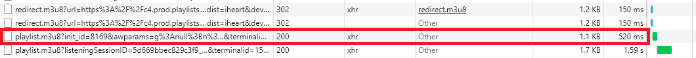

Radio Streams Guide for ATS and ETS2
Introduction
This is a guide for American Truck Simulator (ATS) and European Truck Simulator 2 (ETS2) that will teach you how to find and use radio stream URLs to program custom radio stations, allowing you to listen to your favorite local stations in-game. It also provides an introduction to local transcoding (how to use codecs that the game does not support, how to listen to local files with the in-game radio), how to merge the default radio stations from one game with the other, and how to automate local transcoding using commands.
Nearly every radio station has an online stream and these streaming URLs can be imported to the game by editing the live_streams.sii file located in either ~\Users\YOU\Documents\Euro Truck Simulator 2 or ~\Documents\American Truck Simulator depending on which game you're using. Here is a brief description of some of the file types you may encounter.
- MP3 is becoming an older format for radio streams but this is the format that ATS and ETS2 support.
- AAC and MP4A form the backbone of HTTP Live Streaming (HLS). MP4A is one of most common codecs used for live radio streams but is not supported by the game.
- M3U and M3U8 is a multimedia playlist format that is used in HLS and forms the basis of Dynamic Adaptive Streaming over HTTP (DASH). They can have one or multiple entries and each entry points to a stream. The file is written in plain text and can be opened with any text editor. The '8' in M3U8 denotes that the file is encoded in UTF-8. Files encoded in UTF-8 may also include directives and comments prefaced by a hash/pound (#), such as track information.
- PLS is a multimedia playlist format commonly used on SHOUTcast and Icecast servers. These files are also written in plain text and will typically point to a single source file. Like M3U8 files, PLS files can also store track information such as title or lenghth.
The only thing you will need to find radio streams is a web browser with developer console. I prefer the console in Chrome over Firefox, especially the network monitor. To open the developer console, press F12. For active transcoding you will need a media player that supports it. I recommend VLC because it is a free, powerful, and user-friendly media player that has support for almost every audio and video codec. You can download VLC at their website. VLC is also a great program to test streams before you try importing them to the game. Every link in your live_streams.sii should be formatted like this:stream_data[Number]: "URL|Name|Genre|Language|Bitrate|Favorite"
- Number: Unique stream ID number, used by the game to organize the list.
- URL: Direct link to the source.
- Name: In-game description of station.
- Genre: Can be changed for organizing preferences.
- Language: Broadcast language. You could theoretically use this for anything.
- Bitrate: This is not autodetected. You can set it to any number or leave it blank. You can check the bitrate of a stream in VLC.
- Favorite: Boolean, 0 for no or 1 for yes.
Finding and Importing URLs
The example station I will use is FM Aspen 102.3 Buenos Aires. Navigate to the media player of the site and press F12 to open the developer console (ctrl+shift+J is another hotkey) and select the "Network" tab. Press play on the site and you should see the media URLs in the network traffic console. As soon as the stream audio begins (after any ads) you can stop the stream. Doing so reveals that the media source for player.fmaspen.com is an unobscured AAC file hosted at this URL: http://18183.live.streamtheworld.com/ASPENAAC.aac
Since this stream uses AAC/MP4A encoding, it will not work with the game. This is a very common scenario and is always the case with iHeart radio stations. A workaround is to use active transcoding in VLC to convert the stream to MP3 from another codec. This will be covered later in the guide; for now let us see if we can find another site that rebroadcasts this station. Search the internet for "aspen 102.3 stream". Check a few of the top results for working streams, and keep network monitor open so you can check the codec. If TuneIn rebroadcasts your station that is great because they almost always use MP3. For this station, there are a couple sites that rebroadcast and use MP3:
Streema.com - located at http://20283.live.streamtheworld.com/ASPEN.mp3
Radio.net - located at http://20833.live.streamtheworld.com/ASPEN.mp3
The quality on both seems to be about the same, which is lower than the official stream because they have a lower sample rate. HLS and DASH streams usually are higher quality than basic internet radio streams. This may be the quality that Aspen provides to these sites or they may be transcoding the file at a lower quality. Copy the URL and format your stream_data entry following the format example, and add the entry to the live_streams.sii file. This is what the entry should look like, replacing the ??? with the next number in your current file.
stream_data[???]: "http://20283.live.streamtheworld.com/ASPEN.mp3|FM Aspen 102.3 Buenos Aires|80s|ES|64|0"
Active Transcoding - Using Other File Types (MP4A, AAC, M3U8, Local Media)
If you add a stream to live_streams.sii that is the incorrect format, it simply won't work in-game. There is no error message or indication that the stream isn't dead, you just have to know. There is a workaround that allows you to convert an MP4A stream to MP3 for use in-game that I learned about from Kevin O'Connor. The example stream I will use is 102.7 KIIS FM Los Angeles which is an iHeart radio station. This is the location of the stream source file: http://c2icyelb.prod.playlists.ihrhls.com/185_icy
- Test the stream. Open VLC, press ctrl+N, paste the stream URL, and play.
- We will locally transcode this stream. Press ctrl+S.
- Here you can see that VLC can transcode and stream several types of sources: local files, disc, network, or capture device. Select network. If the URL is not already there, paste it. Click stream to open the stream output wizard. Click next.
- In the new destination drop-down, select HTTP. Click add.
- Leave default, this will use localhost port 8080. If you have used port 8080 then choose another. Click next.
- Active transcoding must be selected on this screen. Change profile to audio - mp3. Click next. Click stream.
- (first time only) Your firewall might prompt you then to allow VLC. If it doesn't, verify that VLC has been allowed through your firewall.
VLC will begin playing but you will not hear any audio through your speakers/headset. Instead, the local MP3 stream can now be accessed at http://localhost:8080 and this URL is what you add to live_streams.sii; the example entry is below (replace ??? with the next number in your file). You can verify audio is playing by opening a second instance of VLC, press ctrl+N, and enter the MP3 stream URL. You will hear the audio that is being transcoded by the first instance of VLC. Once you've added the entry, you are ready to open the game and play the station. You'll need to leave VLC open while you play.
stream_data[???]: "http://localhost:8080|102.7 KIIS FM Los Angeles|Pop|EN|128|0"
Working with M3U and M3U8 Files (iHeart) | Updated 10 Sep 2019
iHeart obfuscates their streams, making it somewhat more difficult to obtain a file for local transcoding. This section will cover where to find this file and some of its key components. The stream will be organized and split into chunks contained in M3U8 files. For this example I will be using WDXB 102.5 FM of Birmingham. This is the iHeart website to listen to the station.
Open the "Network" tab of the developer tools (F12) and play the station. As soon as the station's audio begins, you can stop the stream. Sort the files by name. There are playlist.m3u8?listeningSessionID=BigStringHere files. More of these will appear the longer we listen to the station. These are the chunks or parts of the stream. You can click these and see that they point to the subdomain cdn-chunks.prod. Each chunk is an AAC file. We don't need these.
We are looking for the file named playlist.m3u8?init_id=NumbersAndStuff, which is the playlist file that initialized the connection. If you click this file you will see a link to the station stream and the port in use. If you enter the highlighted URL, you will download a file that can be played in VLC and contains the following if opened in a text editor:
#EXTM3U
#EXT-X-STREAM-INF:BANDWIDTH=49000,CODECS="mp4a.40.5"
https://c4.prod.playlists.ihrhls.com:443/3089/playlist.m3u8?listeningSessionID=BigStringHereThis file points to "c4.prod.playlists" and the URL includes a port (443) in addition to the station identifier (3089). We can tell that this is an mp4a stream from the track information directive where it says codecs="mp4a.40.5". This is the file we can use for local transcoding. Copy everything up to the question mark and follow the instructions in the section above (Using MP4A files in-game). Now that we understand the naming structure, it becomes easy to grab new links for transcoding. The station identifier is listed all over the place, including the URL of the station. The port is always 443 for iHeart. So all you need to format your own link is to press play on the station and identify which iHeart server the station lives on (c1, c2, c3, c4).
https://c4.prod.playlists.ihrhls.com:443/3089/playlist.m3u8
https://[SERVER].prod.playlists.ihrhls.com:443/[STATION_ID]/playlist.m3u8
Merging Default Radio Stations
You can combine all the default stations into one live_streams.sii file and use it in both games. You will need to own and install both games.
- Run each game and select radio. Press "update from internet."
- Navigate to the ~\Documents\Euro Truck Simulator 2 folder and open live_streams.sii.
- Copy everything from "stream_data[0]" down to the last station (don't copy the curly brackets at the end of the file).
- Navigate to ~\Documents\American Truck Simulator and open the live_streams.sii file there.
- Paste above "stream_data[0]" then head to the end of the list. Rename everything in sequential order. If the last number you pasted was 235, the "stream_data[0]" below it will become 236. Do this for all 38 default ATS stations then save the file.
- Copy the live_streams.sii file from your ~\Documents\American Truck Simulator directory into your ~\Documents\Euro Truck Simulator 2 directory and replace when prompted.
(Advanced Users) Using CLI to Start Transcoding
This is only for users who are comfortable using Command Prompt or other command line interface. This section will allow you to start streams using a single command. For this tutorial I will be using WCKA AM 810 / 94.3 FM Alabama. This is INPUT, the streaming source for this station: https://ice64.securenetsystems.net/WCKA
First, open the command line. You can do this by pressing windows+R and typing "cmd" or a shortcut can be found in the Start Menu under "Windows System" folder. Navigate to your VLC installation folder. Here is the default path: cd C:\Program Files\VideoLAN\VLC
Next, open VLC by typing "vlc". Follow the instructions under "Using MP4A / AAC files in-game" up to step 6. The last screen of the Stream Output Wizard provides a generated stream output string which you will copy. The output string for WCKA is below. Unfortunately, in the current release of VLC, this string is not expressed in the way Command Prompt is expecting so we will need to fix it before it can be used. Paste the string into your preferred text editor for a moment and close VLC.:sout=#transcode{vcodec=none,acodec=mp3,ab=128,channels=2,samplerate=44100,scodec=none}:http{mux=mp3,dst=:8080/}:no-sout-all :sout-keep
Below is the desired formatting. VLC's documentation is not user friendly, very complete, or up-to-date. However, more information on using VLC with the CLI can be found here and command line examples can be found here.vlc "INPUT" --sout "#transcode{STREAM SETTINGS}:http{mux=CODEC,dst=:OUTPUT PORT}" :no-sout-all :sout-keep
Below is the completed command to transcode WCKA to mp3 and output to localhost port 8080. Compare this to the generated output string. Copy your formatted command and paste to Command Prompt (make sure you are in VLC's installation directory). When you run the command, VLC should open and begin streaming. Open a new VLC window and test your stream. Any errors will be displayed under "messages" (ctrl+M) or in a pop-up error window. If you receive an error that VLC media player could not start because "either the command line options were invalid or no plugins were found" this means you have an error in your command expression.vlc "https://ice64.securenetsystems.net/WCKA" --sout "#transcode{acodec=mp3,ab=128,channels=2,samplerate=44100,scodec=none}:http{mux=mp3,dst=:8080}" :no-sout-all :sout-keep